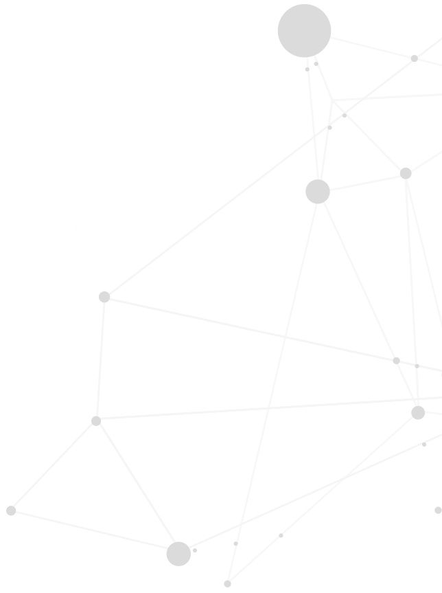
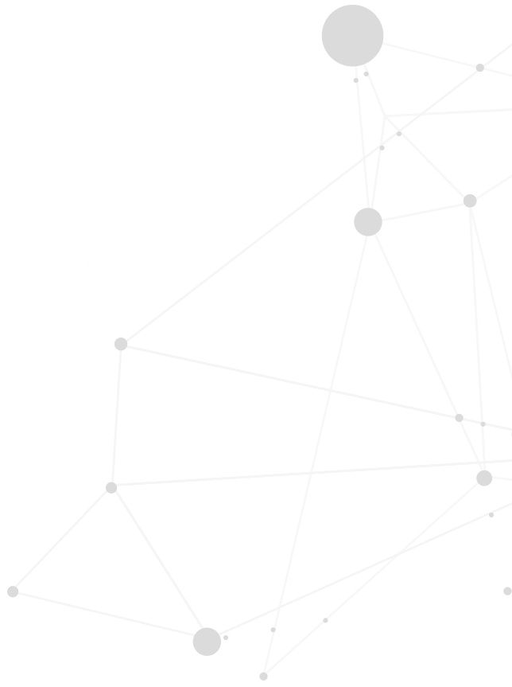

Artistic residencies included in the program of the Trafaria Digital Art Festival 2025
In this residency we seek to bring together what seems divided, combining experiences of art and technology, in order to reflect on the processes of artistic creation, find working methods, have local impact and global visibility. The history of art is also a history of technologies, and these technologies allow for new artistic manifestations. We intend to explore the dialogue between Art and Technology, promoting the creation and development of artistic proposals that question and explore the relationship between society, the individual, art and technology.
Participants should seek internal and external collaborations, going beyond their previous experience, identifying important local themes, which will naturally be relevant in other geographies. While some technological creations have immediate practical applications, art can transcend this need. Art can provoke surprise, reflection and open up new perspectives.
Residence
Recent graduates and masters, doctoral students and other students of art, artistic studies, digital media, design, computer engineering, electrotechnics, mechanics, or related areas are invited to participate in this residency. Participants with other backgrounds may also apply, provided they have relevant artistic and/or technological experience, for example in performance, physical computing, sensors, microprocessors, image, audio and video.
Between eight and ten participants, depending on quality will be selected and will receive a grant of €1100 for the development and production of an artistic proposal with technological components. Additional equipment is also available for the development and exhibition phase.
The residency will take place in Trafaria, including workspaces and exhibition space and will take place from 6 to 26 October 2025.
The work will be developed on a daytime basis, but with flexibility, for example for classes and other academic commitments. It is planned to hold specific activities, including workshops or short courses during the residency.
Presentation
Participants must show the results, processes or prototypes in a presentation/exhibition to be held at the end of the residency at the Trafaria Digital Art Festival, from November 14 to 16, 2025.
Applications
Applications must be sent by email to trafariacriativa@gmail.com and include portfolio, portfolio, brief CV and motivation letter, by August 15th. Additionally, applications may contain a concrete proposal for a project under development or to be developed. Proposals should not only use technology, but also reflect on its impact on society and culture, especially in Trafaria.
Results
The selected participants, awarded with a grant are Andrés Isaza, Catarina Reis, Elisabete Sousa, Hugo Paquete, Rita Alferes, Rita Olivença and André Rocha, Sandra Araújo - S4ra, Sara Wual Barros, Susana Santa-Marta and Vanessa Soreto.